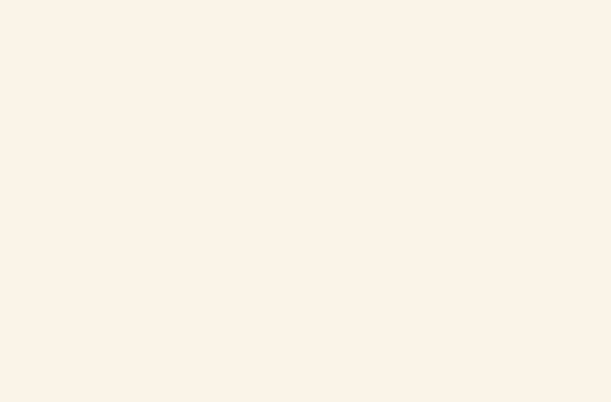
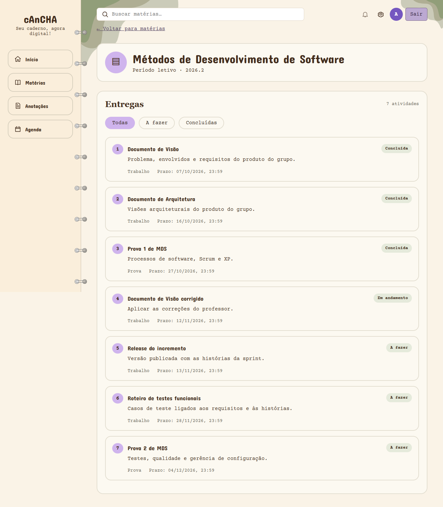

Relatório de execução dos testes — Sprint 7
| Responsável | João Lucas R. Cabral (Analista de Qualidade) |
| Data da execução | 10 e 11/11/2026 |
| Versão da aplicação | developer em 2390f7a (após os merges dos PRs #64, #65 e #71) |
| Casos executados | CT-01, CT-02, CT-03, CT-04, CT-05, CT-07, CT-08 |
| Roteiro de referência | Documento de Visão v1.2, seção 6.2 |
| Atualização | 11/11/2026: os defeitos D1 e D2 foram corrigidos e entraram na release v0.1.0 (ver seção 8) |
1. Resumo
A execução foi feita em dois níveis: API (com curl, direto nos endpoints) e interface (navegador dirigido por script, simulando o aluno).
| Nível | Verificações | Passaram | Falharam |
|---|---|---|---|
| API | 45 | 43 | 2 |
| Interface | 17 | 11 | 6 |
As 6 falhas de interface se reduzem a 2 defeitos (cada um reprova várias verificações). As 2 falhas de API são de uma funcionalidade ainda não mergeada, não de defeito.
Conclusão: o back-end cumpre o que a Visão pede. Os dois defeitos estão no front-end e são de integração — cada peça funciona isolada, e a junção é que falha.
2. Defeitos encontrados
D1 — Agenda fica em branco (issue #95)
Situação: corrigido no PR #101, na release v0.1.0.
A tela /agenda não renderiza nada. O GET /agenda responde 200, mas o front quebra ao consumir.
O back-end devolve um objeto agrupado ({"A_FAZER": [...], "EM_ANDAMENTO": [...], "CONCLUIDA": [...]}) e AgendaPage.jsx trata a resposta como array, chamando itens.filter(...). O resultado é TypeError: itens.filter is not a function durante a renderização.

Impacto: a US04a (Agenda Kanban, Must) não é demonstrável. Afeta o CT-05.
D2 — Materiais não aparecem na disciplina (issue #96)
Situação: corrigido no PR #102, na release v0.1.0.
A página da disciplina mostra apenas as entregas. O disciplinaApi.js nunca chama GET /disciplinas/{id}/conteudos, então a seção de materiais não existe na tela.
O back-end responde corretamente: em MDS devolve "Scrum Guide" e "Princípios ágeis", com tipo, data e link.

Impacto: a US03b (Materiais da disciplina, Must) não é demonstrável. Como não há nenhum link com target="_blank", o critério "abre em nova aba" também fica sem como verificar. Afeta os CT-03 e CT-04.
3. Resultado por caso de teste
| Caso | Resultado | Observação |
|---|---|---|
| CT-01 Autenticação | Passou | Senha errada mostra a mensagem; tela protegida sem login redireciona ao login; token inválido devolve 401. |
| CT-02 Acesso às disciplinas | Passou | As 5 disciplinas da carga aparecem e cada card abre a disciplina. |
| CT-03 Entrega e material | Falhou | Entregas corretas e ordenadas por prazo. Materiais não aparecem (D2). |
| CT-04 Limite de navegação | Passou com ressalva | Disciplina em 1 clique, entrega em 1, Agenda em 1 — todos dentro do limite de 3. O alvo "material" não pôde ser contado por causa do D2. |
| CT-05 Agenda e próximas entregas | Falhou | As próximas entregas no Início estão certas (5 itens, sem concluídas, ordenadas). A Agenda não renderiza (D1). |
| CT-07 Painel de progresso | Passou | Progresso por disciplina e no semestre coerentes com as entregas concluídas; o valor muda ao concluir uma entrega, sem recarregar a página. |
| CT-08 Integração front-end e API | Passou | Todas as telas obtêm os dados da API; as alterações se refletem sem recarregar. |
CT-06 (anotações) e CT-09/CT-10 completos não foram executados: a funcionalidade de anotações está prevista para a Sprint 10 e o fluxo completo depende dos dois defeitos acima.
4. Verificações adicionais
Isolamento entre alunos. Um aluno nunca vê nem altera dados de outro. O aluno sem matrícula (aluno3@cancha.test, da carga V7) recebe 403 ao tentar ler atividades, materiais ou concluir entregas de disciplinas em que não está matriculado, e vê listas vazias bem formadas nas telas gerais.
Legibilidade (US02). Nenhum texto visível abaixo de 14px, medido sobre os elementos renderizados.
Cobertura do back-end (JaCoCo). 90,1% de linhas e 83,3% de ramos, com 109 testes passando — acima da meta de 80% da estratégia de testes.
Desempenho (REQ-13). Com o serviço já ativo, /disciplinas, /agenda e /progresso responderam entre 1,2 e 1,8 s no Render, dentro da meta de 2 s. O primeiro acesso após o serviço dormir levou 175 s, o que confirma o risco R7: é preciso acordar o ambiente antes da apresentação.
5. Nota sobre o roteiro de testes
Os valores esperados dos casos de teste na Visão v1.2 não batem com a carga de exemplo atual (V7), porque os prazos do seed são relativos a CURRENT_DATE e o número de entregas mudou.
| Caso | A Visão espera | Os dados atuais têm |
|---|---|---|
| CT-03 | Entregas "Lista 1, Trabalho 1, Prova 1, Lista 2"; prazo 14/11 | 7 entregas em MDS, com outros títulos e prazos relativos |
| CT-05 | 10 entregas, 1 concluída | 25 entregas: 10 a fazer, 4 em andamento, 11 concluídas |
| CT-07 | MDS 25% → 50%; semestre 2 de 10 | MDS 42,9%; semestre 11 de 25 |
| CT-03 | Material "Slides da aula 1" | "Scrum Guide" e "Princípios ágeis" |
Por isso a execução verificou os critérios de cada caso (ordenação, coerência do cálculo, permissões, estados vazios) em vez dos números fixos: um valor fixo escrito hoje volta a ficar desatualizado assim que a carga mudar ou o dia virar.
Recomendação: na revisão do roteiro, trocar os valores fixos por critérios verificáveis — por exemplo, "o progresso da disciplina é igual a concluídas ÷ total" em vez de "a barra mostra 25%". Também vale alinhar o nome: a Visão fala em "materiais" e a API expõe /conteudos.
6. Observação sobre a suíte automatizada
O defeito D1 passou pela CI porque AgendaPage.test.jsx monta o mock da agenda como um array, ou seja, valida um contrato diferente do que a API entrega. Os testes do front ficam verdes e a tela quebra assim mesmo.
Ao corrigir o D1, vale ajustar o mock para o formato real da resposta — senão o teste continua verde sobre uma tela quebrada. É o mesmo cuidado que vale para os demais testes de tela: quando o mock e a API divergem, o teste deixa de proteger.
7. Como reproduzir
- Subir o ambiente:
docker compose up --build -dna raiz do repositório. - Em
frontend/, criar.env.localcomVITE_API_URL=http://localhost:8080e rodarnpm run dev. - Entrar com
aluno1@cancha.teste a senha de desenvolvimento descrita no README do back-end.
Os alunos de teste da carga V7 são aluno1 e aluno2 (matriculados nas 5 disciplinas) e aluno3 (sem matrícula, para verificar os estados vazios e as permissões).
8. Situação dos defeitos
Atualizado em 11/11/2026, depois da release v0.1.0.
| Defeito | Correção | Casos a reexecutar |
|---|---|---|
| D1 — Agenda em branco (#95) | PR #101: a tela transforma a resposta agrupada do GET /agenda em uma lista. O teste da página passou a usar o formato real da resposta, como recomendado na seção 6. |
CT-05 |
| D2 — Materiais não aparecem (#96) | PR #102: a página da disciplina chama GET /disciplinas/{id}/conteudos e mostra a seção Materiais, com o link abrindo em nova aba. |
CT-03 e CT-04 (cliques até um material) |
Os resultados da seção 3 continuam valendo para a versão testada (2390f7a). A reexecução de CT-03, CT-04 e CT-05 na release v0.1.0 fica com o Analista de Qualidade e deve ser registrada neste relatório ou no da Sprint 8.